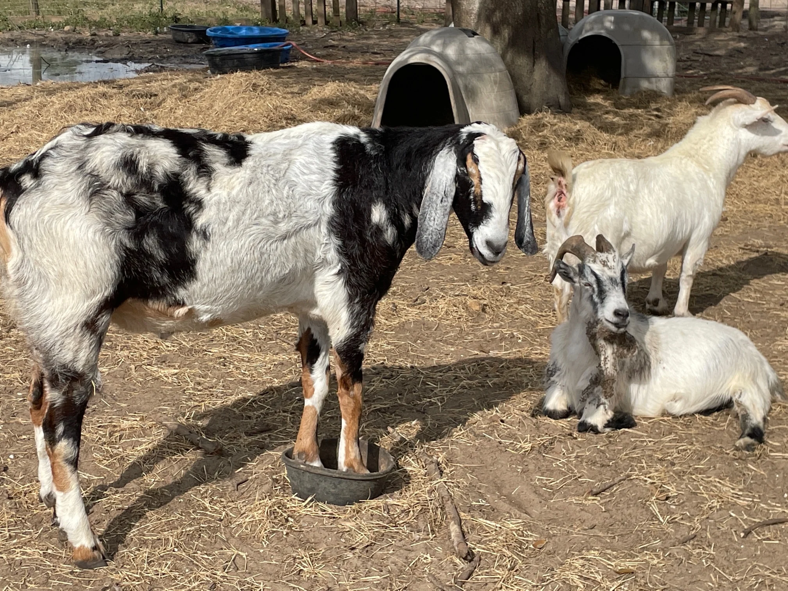
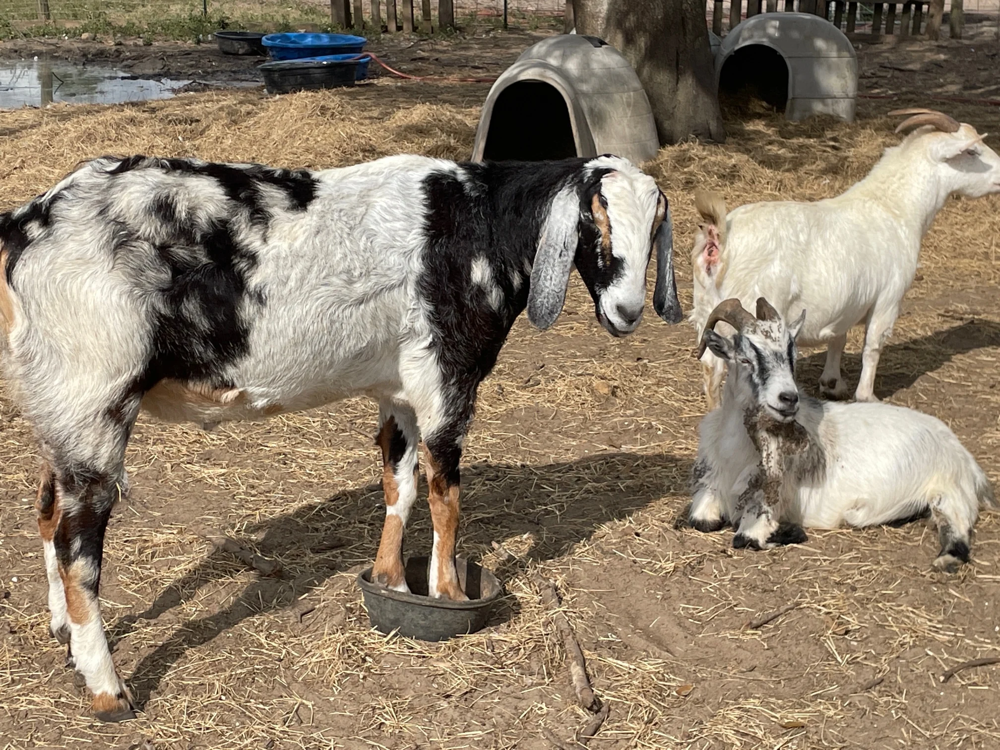

Brilliantly facetious dialogue +
natural behavior of 200+ animals of 12 species +
sharp-witted improv with said animals +
an unconventional location =
Friends Not Food is a unique piece of rib-tickling entertainment that will provide ample
opportunity to shepherd to the sentience, intelligence, and jocularity of these uproarious residents.
This in turn will encourage veganism, drastically reducing animal agriculture, leaving those remaining
precious
resources for humans, directly decelerating climate change, and thereby saving the world.


Rachel, 3 cats away from being a city spinster, receives an unexpected, unorthodox offer to give
up the glamour of her
cubicle to go feed pigs and scoop poop at a faltering sanctuary in rural Florida.
Obvs she accepts, and her arrival involves the introduction to manifold animals, a muddy handful
of locals, and mad
debt. Connect with these peeps to raise some funds, or there will be no more poop to scoop.
And so begins a new life amidst a cast of characters that almost seems made up.


 


In 2017, Chris Vane and his partner Randy Sellers took a chance on a long-time dream
and
purchased a
30-acre property in SW Florida.
The plan was to create a safe space for abandoned and abused agricultural animals to live out
the
rest of their lives in
peace, free of cages.
With the support of community members and strangers alike, Chris and Randy have been able to
love
and care for over 200
different animals, and they have big plans to help countless more.
Chris named Little Bear Sanctuary after his late mom Ursula, whose name means ‘little bear’ in
Latin. “She was a great
influence in my life and taught me compassion,” says Chris, who attributes his sincere love of
animals to his mom.


What could be more ingenious than an ostensibly vapid program subliminally turning
its viewers
plant-based?
That's not exactly what we're doing here. This season. But we figured hating-on-vegans has been
a national pastime for
like a decade now so someone should really lean into that.
Let's show the hilarity, eccentricity, banality of an actual working sanctuary punctuated by
some of those crazy
animal-people.
But scripted, of course.
And because some of the production team actually are nutty vegans, there's another shtick. This
piece o' work will never
actually use any of the 200+ animals on set. We don't believe in commodifying sentient beings,
so we're just gonna go
forth and shoot, knowing that at any moment the actors may get jumped on, bleated at, nuzzled,
pecked, and... whatever
zebus do -
so the use of improv will be strong with this one.